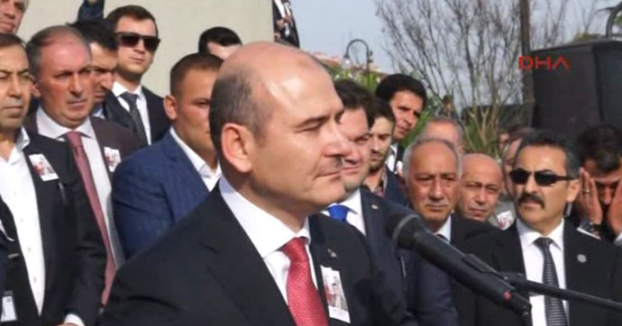

Bakan Soylu ‘çok net’: Suikastçının ‘FETÖ’ bağlantısı açık olarak görülüyor
İçişleri Bakanı Süleyman Soylu, Rusya’nın Ankara Büyükelçisi Andrey Karlov’a suikast düzenleyen polis memuru Mert Altıntaş’ın Gülen Cemaati’yle bağlantısı bulunduğunu tekrarladı.
Siirt’e bir günlük ziyarette bulunan Soylu, Altıntaş’ın Gülen Cemaati’yle ilişkisini şöyle anlattı: “Bir nokta çok net, teröristin FETÖ ile ilişkisi açık olarak görülüyor. Ve teröristin çocukluğu anından itibaren görev alanı dahil olmak üzere nasıl bir hayat çizgisi ortaya koyduğu çok net ve açıktır. Son bir buçuk yıldaki farklı bağlantılar oluşturma hedefi ve bir takım saptırma hedefi yapılan soruşturmada açık bir şekilde belirlenmektedir. Hedef saptırma konusunda ortaya koymaya çalıştıklarının aslında ne kadar da eğreti durduğu çok nettir. Bu konuda bir şey daha belirtmek isterim; şahsi yetkinlikten ziyade teröristin bir akıl kurgusu sonucu orada olduğu da çok nettir.”
Suikastla ilgili önemli delillere ulaşıldığını öne süren Soylu, “Soruşturma çok yönlü devam ediyor. Rusya Federasyonu’n gönderdiği görevlilerle birlikte emniyet mensubumuz, savcımız gerekli çalışmaları tüm titizlikle ortaya koyuyor. Şunun altını çizmek isterim ki sorumlu bir işbirliği gerçekleştiriliyor. Hem ülke için hem ülke dışı tüm bağlantılara ulaşılmaya çalıştığını kamuoyu ile paylaşmak isterim” dedi.

Büyükelçi Andrey Karlov, 19 Aralık akşamı Ankara’da bir sergi açılışı sırasında sırtından vurularak öldürülmüştü. Katilin kimliği 1994 doğumlu, iki buçuk yıllık polis, Ankara’da çevik kuvvette görevli Mevlüt Mert Altıntaş olarak açıklanmıştı.
Fotoğraf: DHA
Siirt’e bir günlük ziyarette bulunan Soylu, Altıntaş’ın Gülen Cemaati’yle ilişkisini şöyle anlattı: “Bir nokta çok net, teröristin FETÖ ile ilişkisi açık olarak görülüyor. Ve teröristin çocukluğu anından itibaren görev alanı dahil olmak üzere nasıl bir hayat çizgisi ortaya koyduğu çok net ve açıktır. Son bir buçuk yıldaki farklı bağlantılar oluşturma hedefi ve bir takım saptırma hedefi yapılan soruşturmada açık bir şekilde belirlenmektedir. Hedef saptırma konusunda ortaya koymaya çalıştıklarının aslında ne kadar da eğreti durduğu çok nettir. Bu konuda bir şey daha belirtmek isterim; şahsi yetkinlikten ziyade teröristin bir akıl kurgusu sonucu orada olduğu da çok nettir.”
Suikastla ilgili önemli delillere ulaşıldığını öne süren Soylu, “Soruşturma çok yönlü devam ediyor. Rusya Federasyonu’n gönderdiği görevlilerle birlikte emniyet mensubumuz, savcımız gerekli çalışmaları tüm titizlikle ortaya koyuyor. Şunun altını çizmek isterim ki sorumlu bir işbirliği gerçekleştiriliyor. Hem ülke için hem ülke dışı tüm bağlantılara ulaşılmaya çalıştığını kamuoyu ile paylaşmak isterim” dedi.